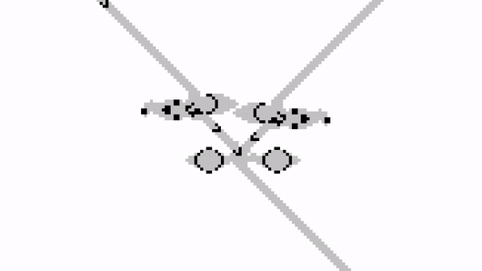
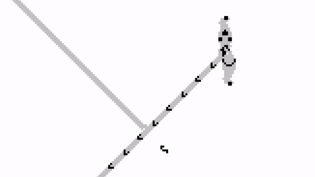
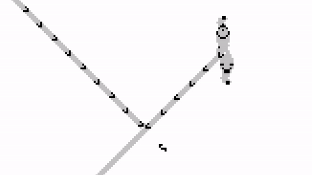
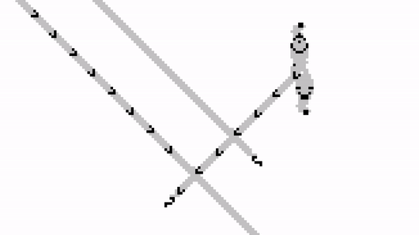
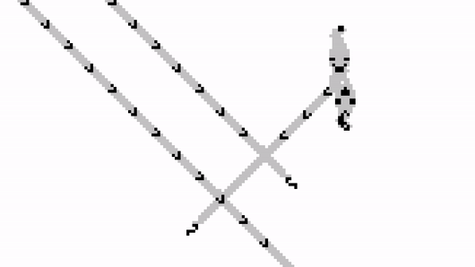
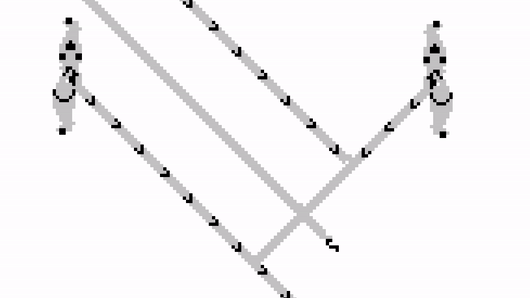
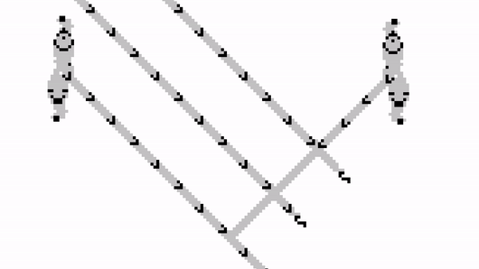
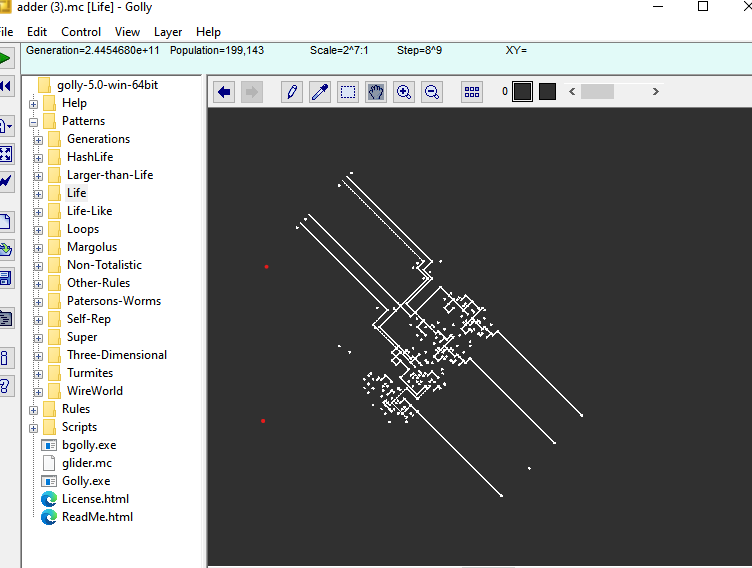
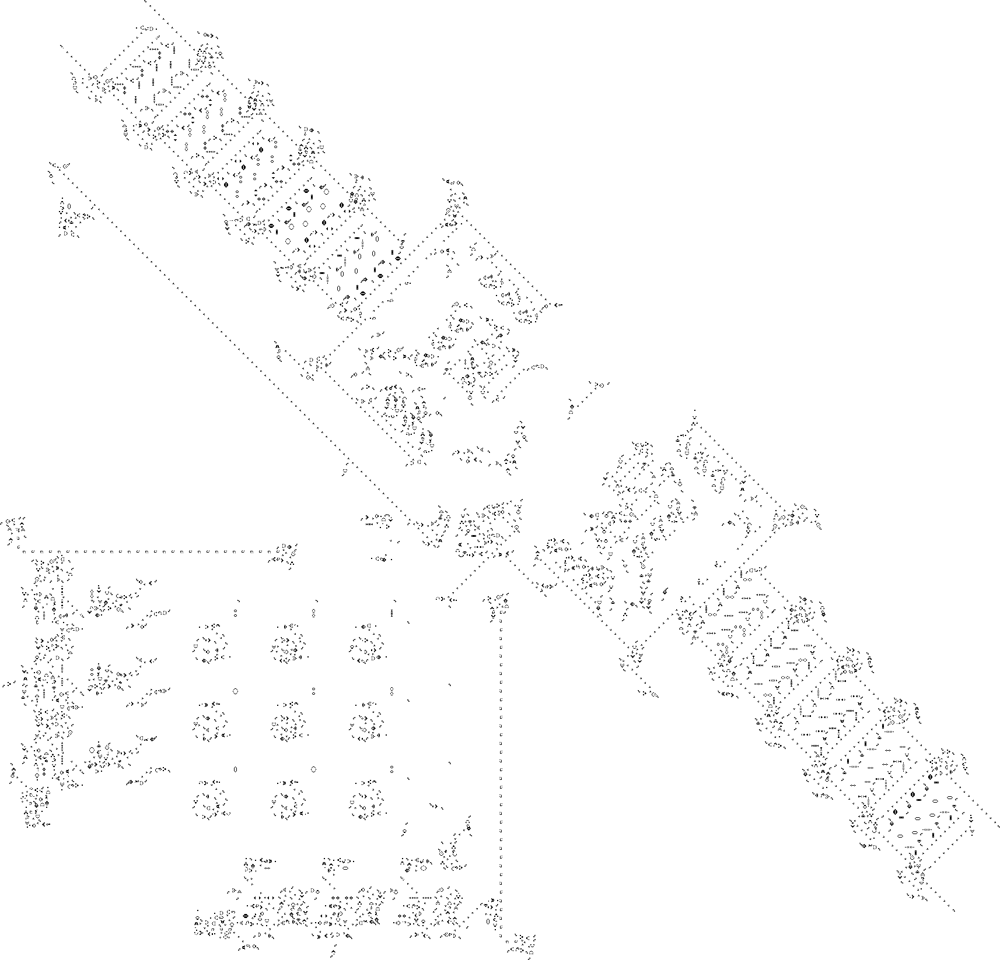
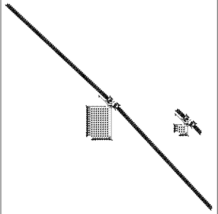

Доказательство: Жизнь — универсальный компьютер
Игра «Жизнь» — клеточный автомат, изобретённый математиком
Джоном Хортоном Конвеем в 1970 году.
Это двумерная сетка клеток.
Каждая клетка либо живая или мёртвая.
На каждом шаге все клетки обновляются одновременно по четырём правилам:
Правило: B3/S23
4 клетки. Не двигается.
6 клеток. Стабильный.
7 клеток. Не меняется.
Цикл: 2 шага.
Цикл: 2 шага.
Движется по диагонали. 1 клетка за 4 шага.
Стабильная форма. «Ест» глайдер. Потом восстанавливается.
Создаёт глайдер каждые 30 шагов. Бесконечный поток.
Игра «Жизнь» является тьюринг-полной.
ТО ЕСТЬ В НЕЙ МОЖНО СИМУЛИРОВАТЬ ЛЮБУЮ МАШИНУ ТЬЮРИНГА.
«ЧТО ТАКОЕ МАШИНА ТЬЮРИНГА?» ну ладно.....
Для сборки классической машины Тьюринга нам нужны:
Нам нужно понять, как передавать данные. Ответ: с помощью глайдеров.
Пушка глайдеров создаёт новый глайдер каждые 30 поколений, поэтому мы можем использовать этот период как «тактовый сигнал».
Каждые 30 шагов проверяем:
Пушка глайдеров = часы. Один глайдер каждые 30 шагов.
Регулярный сигнал для синхронизации.
Но главный вопрос:
КАК ПОСТРОИТЬ ВСЁ ЭТО ИЗ КУЧКИ КЛЕТОК???
Стабильные блоки = биты памяти.
1 1 0 0 1 0 1
проблема ??

Булева функция — это функция:
f : {0,1}n → {0,1}m
Каждую такую функцию можно разложить на набор функций:
f(x₁, x₂, ..., xₙ) = (f₁(x), f₂(x), ..., fₘ(x)) , где fi : {0,1}n → {0,1}
Любую булеву f : {0,1}n → {0,1}функцию можно выразить только через:
Функция f задана таблицей:
x1 x2 x3 | f 0 0 0 | 0 0 0 1 | 1 0 1 0 | 0 0 1 1 | 0 1 0 0 | 0 1 0 1 | 0 1 1 0 | 0 1 1 1 | 1
Для каждой строки, где f = 1, строим логический терм вот так :
Если xi = 0 мы пишем NOT(xi), a иначе xi.
И между ними пишим NOT.
To есть получаем для 2 и последной строки
Теперь объединяем их через OR:
f = ((NOT x₁) AND (NOT x₂) AND x₃) OR (x₁ AND x₂ AND x₃)
Функция перехода конечного автомата является булевой функцией, и может быть полностью реализована через логические элементы AND и NOT.
Вентиль принимает сигналы (глайдеры) и выдаёт результат.
Глайдер есть = 1. Глайдера нет = 0.






Теперь покажем реальные примеры того, как «Жизнь» выполняет вычисления.

Сумматор складывает 0101 + 0110
Что это: Полная машина Тьюринга, построенная в «Жизни».

Машина удваивает строку: «11» → «1111»
Что это: Универсальная машина, которая может симулировать любую другую машину.

Что это: Симуляция одной игры «Жизнь» внутри другой!